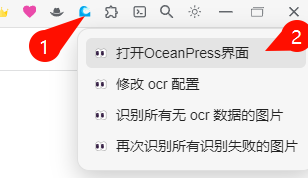
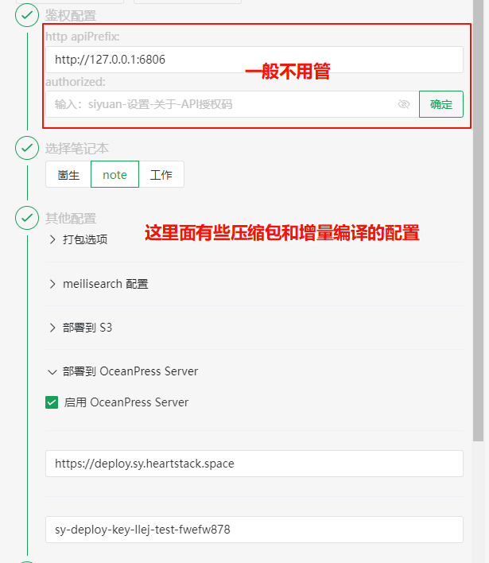

首页
思源公益知识库
知识库站点地址：
https://sy.heartstack.space/
基于
OceanPress云
搭建
教程
1.
思源笔记内安装 OceanPress 插件
2.

打开 OceanPress 界面
3.
配置OceanPress
主要就是配置OceanPress server 相关的
1.
鉴权配置可以用于部署其他例如 docker 启动的思源实例中的笔记本，在思源笔记插件中打开的 OceanPress 基本不用管这个配置
2.
然后选择需要部署的笔记本
3.
默认配置是会弹出压缩包下载的（这个我之后会改一下，目前建议手动取消一下）。增量编译建议开启增量编译但不要开启增量编译文档（这块我之后会针对 OceanPress server 优化）
apiBase ： https://deploy.sy.heartstack.space
apiKey ： 找
崮生
/
链滴发帖
申请

4.
点击开始生成按钮即可（进度条跑完后还需等待，上传部署这块我还没做进进度条中。可以打开思源开发者工具查看详细编译日志和部署日志）
其他
1.
建议在笔记中创建一个名为 index 的文档（就会生成对应的 index.html ，在 web 站点中的含义为入口）
代办
支持直接从思源笔记中复制文档对应的公益站点链接方便分享以及打开
加上自动更新的选项，配置好后就完全不用管了，安心写笔记即可
待解决的bug
生成的文件有丢失
生成的静态文件，代码块凌乱（默认主题）